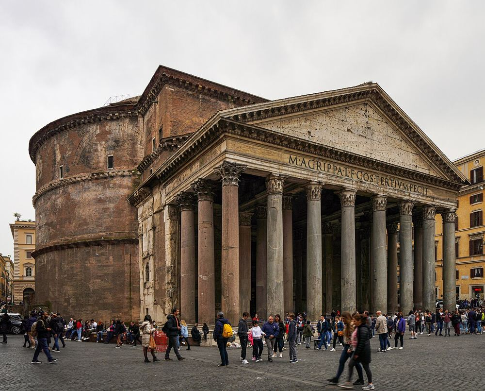
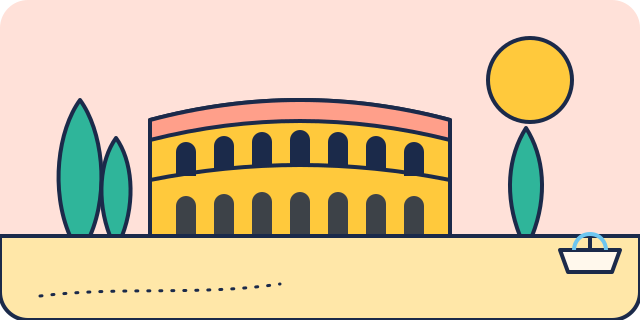
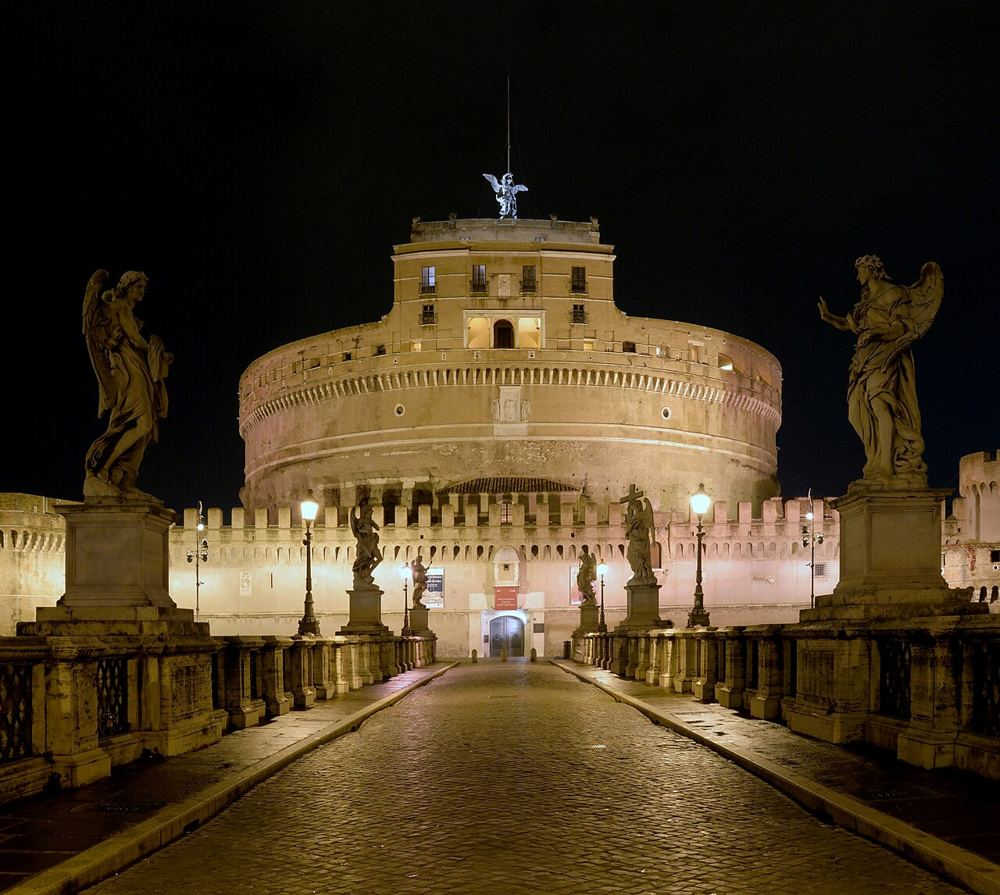

Photo : NikonZ7II · CC BY-SA 4.0 6–17 ans
Panthéon
Environ 30 min · Centre historique (Trevi, Panthéon)
Couvert Poussette OK
Entrée payante depuis 2023. Une visite courte et spectaculaire : le trou au sommet de la coupole fascine les enfants.
Piazza della Rotonda, 00186 Roma

8–17 ans
Musées du Vatican et chapelle Sixtine
Environ 3 h · Vatican et Château Saint-Ange
Couvert Réserver Poussette possible
Immense et très fréquenté : réservez, arrivez à l'ouverture et choisissez un parcours court. Épaules et genoux couverts.
Viale Vaticano, 00165 Roma
Photo : Alvesgaspar · CC BY-SA 4.0 5–17 ans
Basilique et place Saint-Pierre
Environ 1 h · Vatican et Château Saint-Ange
Couvert Gratuit Poussette possible
L'entrée de la basilique est gratuite, la montée à la coupole payante. Contrôle de sécurité et tenue couvrante obligatoires.
Piazza San Pietro, 00120 Città del Vaticano

Photo : Livioandronico2013 · CC BY-SA 4.0 6–17 ans
Château Saint-Ange
Environ 1 h 30 · Vatican et Château Saint-Ange
Couvert Poussette possible
Un château rond aux allures de forteresse, avec rampes, remparts et vue sur Saint-Pierre depuis la terrasse. Le pont des Anges est piéton.
Lungotevere Castello, 50, 00193 Roma
0–11 ans
Explora, musée des enfants
Environ 2 h · Villa Borghese et Flaminio
Couvert Réserver Poussette OK
Un musée à toucher pour les 0-11 ans, avec un espace réservé aux 0-3 ans. Séances sur réservation en ligne. Parfait plan B en cas de pluie.
Via Flaminia, 80, 00196 Roma